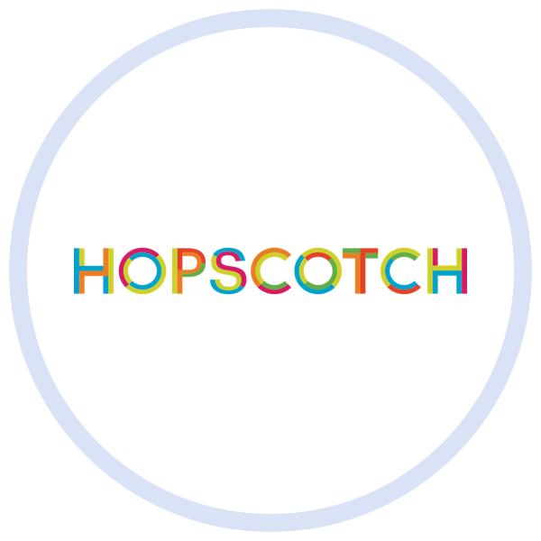
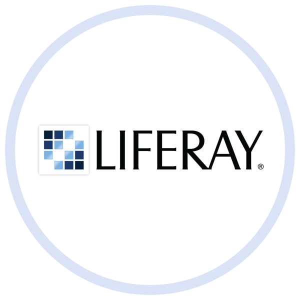

| Employer |
Job Title |
City |
State/Country |
Alumnus |
Email |
|
Emerging Technology Innovation Analyst |
New York |
NY |
Floyd Jonson |
floydjonson@alumni.cmu.edu |
|
Software Development Consultant |
Washington |
DC |
Krystal Swanson |
kswan@alumni.cmu.edu |
|
Consulting Analyst - Accenture Digital |
Boston |
MA |
Jessica Carr |
jessicarr@alumni.cmu.edu |
|
| Associate Web Consultant |
McLean |
VA |
Hector Martin |
ohhec@alumni.cmu.edu |
|
Software Development Engineer |
Seattle |
WA |
Sean Newby |
seann@alumni.cmu.edu |
|
IS&T Software Developer |
Cupertino |
CA |
Anita Hayes |
aha@alumni.cmu.edu |
|
Product Management |
Cupertino |
CA |
Christina Adams |
christia@alumni.cmu.edu |
|
UX Designer |
Cupertino |
CA |
Erik Red |
erikr@alumni.cmu.edu |
|
Product Management |
Cupertino |
CA |
Zack Flores |
zflores@alumni.cmu.edu |
|
UX Designer |
Arlington |
VA |
Allison White |
alliw@alumni.cmu.edu |
|
Associate Applications Developer, Emerging
Technologies Program |
Middletown |
NJ |
Mitch Wood |
mitchw@alumni.cmu.edu |
|
Market Data Analyst |
Hong Kong |
China |
Oliver Egerton |
oton@alumni.cmu.edu |
|
Software Engineer |
Palo Alto |
CA |
Rose Andrews |
roseandrews@alumni.cmu.edu |
|
LDP Associate |
Pittsburgh |
PA |
Sheryl Brown |
Sherylbrown@alumni.cmu.edu |
|
Software Developer |
McLean |
VA |
Suzzane Potter |
spotter@alumni.cmu.edu |
|
Designer |
San Francisco |
CA |
Zara Jenab |
zmj@alumni.cmu.edu |
|
Technology Development Program Associate |
McLean |
VA |
Frank Jones |
frankj@alumni.cmu.edu |
|
Environmental, Health, & Safety Information |
Chicago |
IL |
Matthew Mack |
matmack@alumni.cmu.edu |
|
Information Security Analyst |
New York |
NY |
Mario Fieri |
mfieri@alumni.cmu.edu |
|
Software Engineer |
San Francisco |
CA |
Marylin Young |
maryoung@alumni.cmu.edu |
|
Business Technology Analyst |
Chicago |
IL |
Gary Allen |
garya@alumni.cmu.edu |
|
Business Technology Analyst |
Pittsburgh |
PA |
Rachel Murphy |
rachelm@alumni.cmu.edu |
|
Business Technology Analyst |
Rosslyn |
VA |
Martha Foster |
marthaf@alumni.cmu.edu |
|
Business Technology Analyst |
Chicago |
IL |
Anne King |
aking@alumni.cmu.edu |
|
Business Technology Analyst |
Washington |
DC |
Kat Nelson |
katnels@alumni.cmu.edu |
|
Business Technology Analyst |
Chicago |
IL |
Betty Gray |
begray@alumni.cmu.edu |
|
GTO Analyst |
New York |
NY |
Jaquie Diaz |
jdiaz@alumni.cmu.edu |
|
Analyst |
New York |
NY |
Ron Watson |
ronson@alumni.cmu.edu |
|
Senior Software Engineer II |
Chicago |
IL |
Julian Phillips |
Jphillips@alumni.cmu.edu |
|
Software Engineer |
Madison |
WI |
Jerry Green |
jgreen@alumni.cmu.edu |
|
Integration Engineer |
Madison |
WI |
Craig Tweak |
ctweak@alumni.cmu.edu |
|
Web Developer |
Hartford |
CT |
Billy Carter |
bcarter@alumni.cmu.edu |
|
Software Engineer |
Menlo Park |
CA |
Steve Markulla |
smarkulla@alumni.cmu.edu |
|
Business Systems Analyst |
Washington |
DC |
George Geoffson |
ggeofson@alumni.cmu.edu |
|
Software Development Leadership Program |
San Ramon |
CA |
Larry Barnes |
lbarnes@alumni.cmu.edu |
|
Business Analyst |
Pittsburgh |
PA |
Brian Murdock |
bmurdock@alumni.cmu.edu |
|
Software Engineer |
San Francisco |
CA |
Sara Coleman |
scoleman@alumni.cmu.edu |
|
Software Engineer in Technology |
New York |
NY |
Maddy Blum |
mblum@alumni.cmu.edu |
|
Untitled Position |
New York |
NY |
Emily Henderson |
emilyh@alumni.cmu.edu |
|  |
Co-Founder |
|
CA |
Shirely Church |
schurch@alumni.cmu.edu |
|
Business Systems Analyst |
New York |
NY |
Ruth Rickman |
rrickman@alumni.cmu.edu |
|
Software Engineer |
Cambridge |
MA |
Laurie Hugh |
lhugh@alumni.cmu.edu |
|
IT Leadership Development Program Analyst |
New Bruswick |
NJ |
Andrew Peterson |
apeterson@alumni.cmu.edu |
|  |
Junior Consultant |
Chicago |
IL |
Michelle Barera |
mbarera@alumni.cmu.edu |
|
Associate Web Developer/UI Engineer |
San Francisco |
CA |
Ruby Phillips |
rphillips@alumni.cmu.edu |
|
Web Developer |
Arlington |
VA |
Donna Harris |
dharris@alumni.cmu.edu |
|
Digital Analyst |
New York |
NY |
Dennis Wright |
dwright@alumni.cmu.edu |
|
Designer |
New York |
NY |
Jean-Claude Renaut |
jcr@alumni.cmu.edu |
|
Advisory Associate |
Los Altos |
CA |
Charles Sanders |
chucks@alumni.cmu.edu |
|
Consultant (Advisory - Cybersecurity) |
New York |
NY |
Fred Carter |
fcarter@alumni.cmu.edu |
|
Software Engineer |
San Francisco |
CA |
Carly Whitman |
cwhitman@alumni.cmu.edu |
|
Associate Member of Technical Staff |
San Francisco |
CA |
Clarence Stone |
cstone@alumni.cmu.edu |
|
Project Manager |
New York |
NY |
Teresa Luthers |
tluthers@alumni.cmu.edu |
|
Software Engineer |
Neptune |
NJ |
Diana Queen |
dqueen@alumni.cmu.edu |
|
Engineer |
Honolulu |
HI |
Will Waters |
wwaters@alumni.cmu.edu |